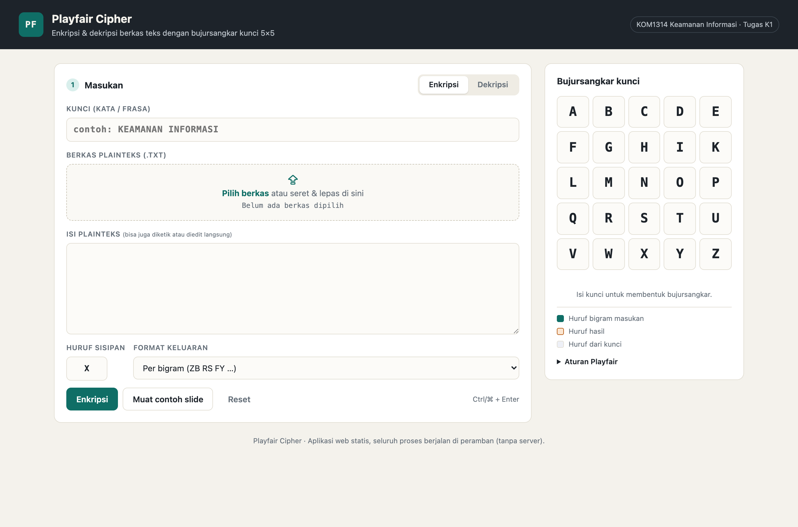
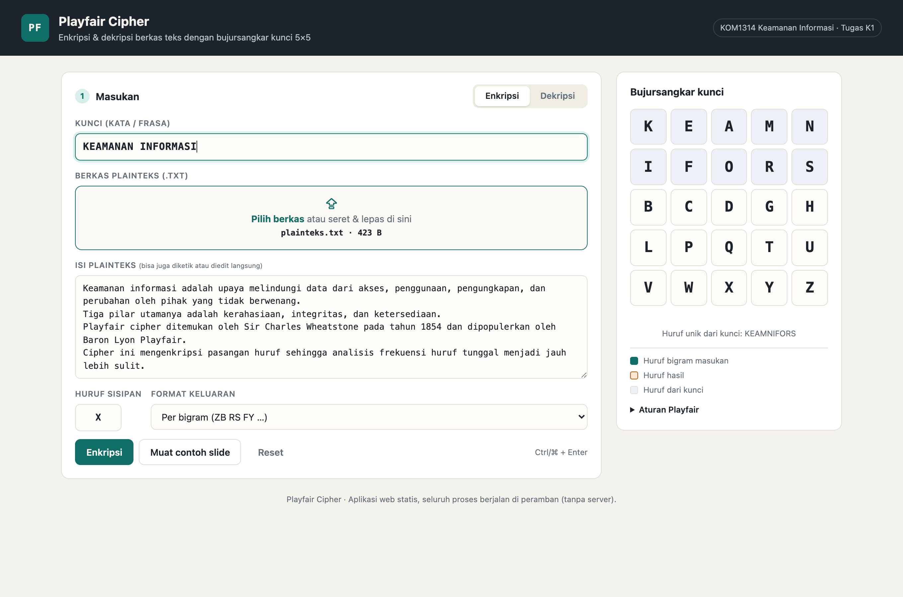
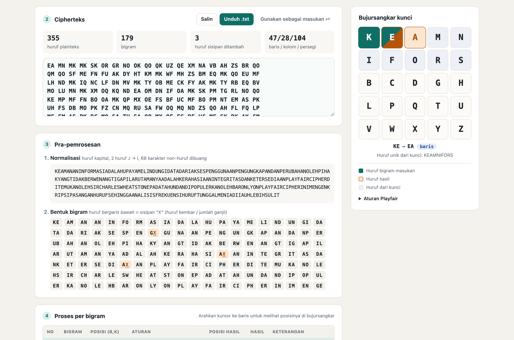
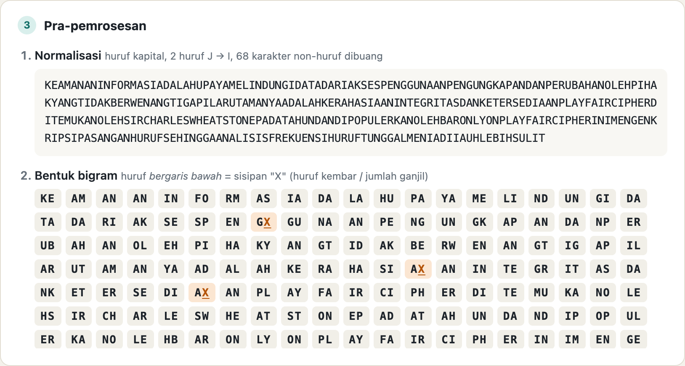
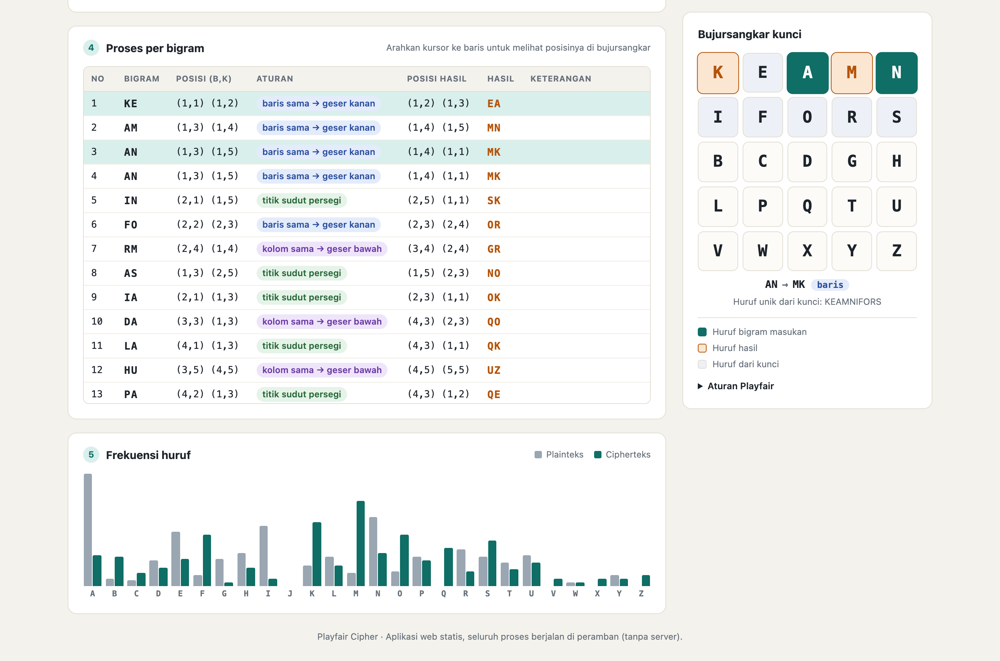
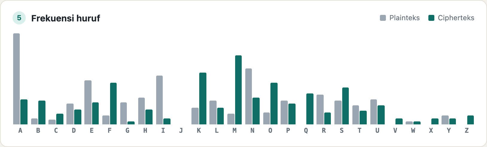
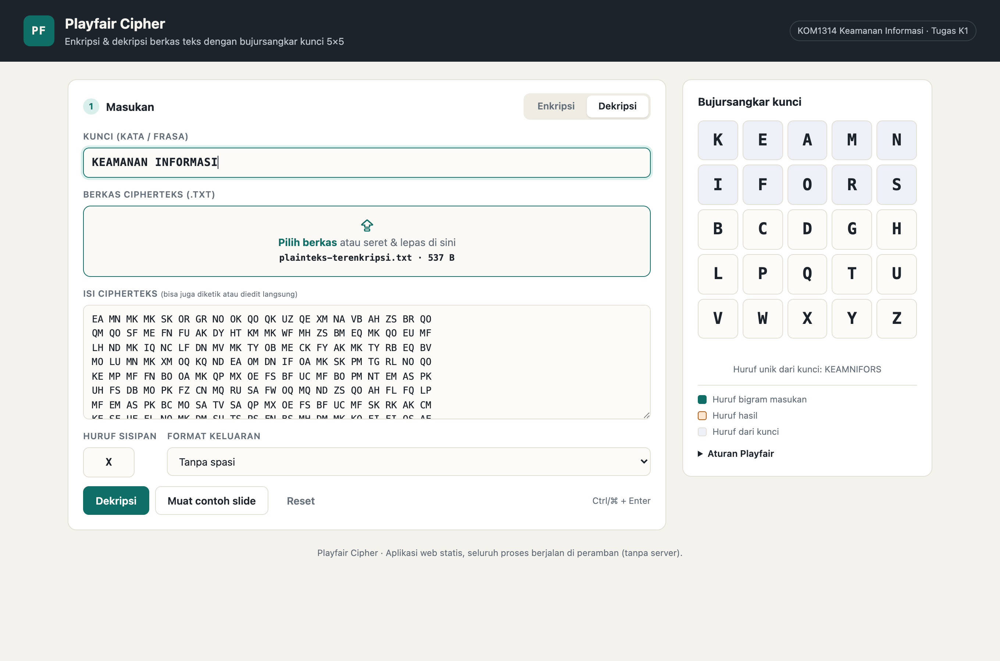
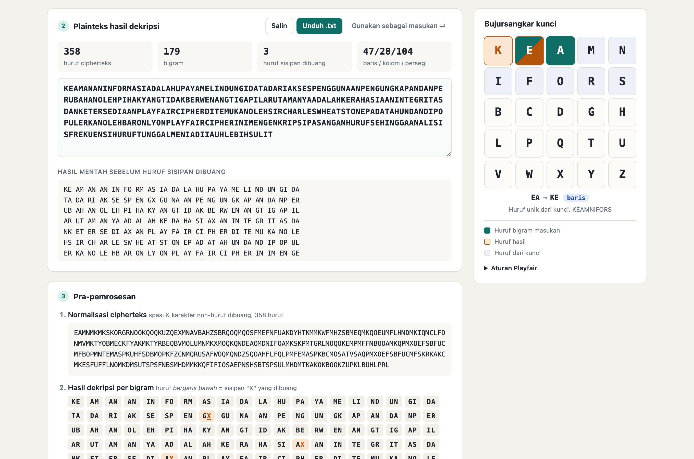
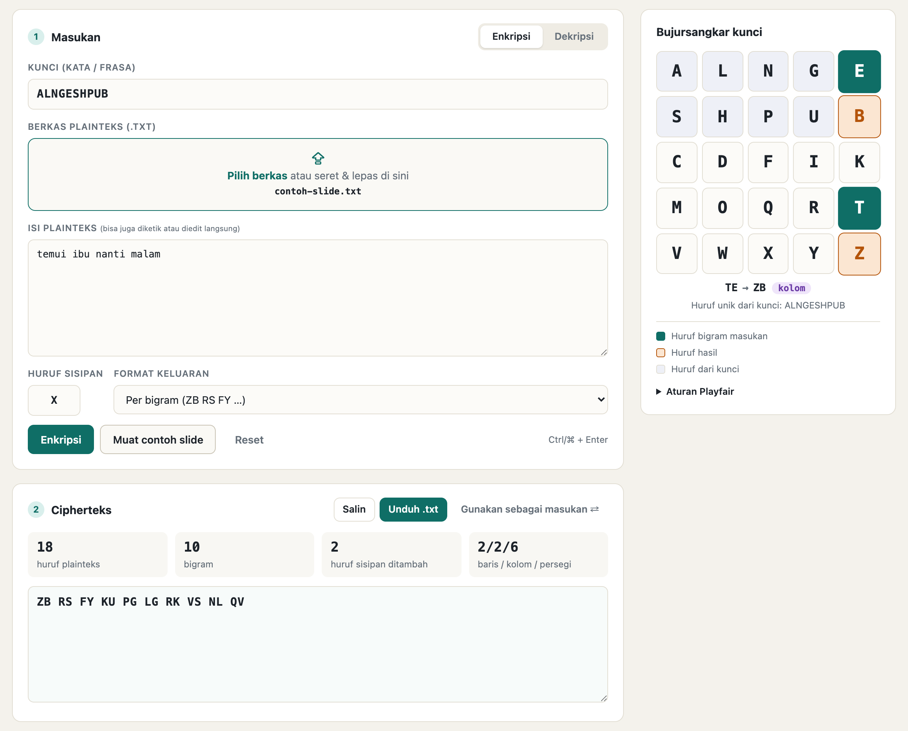
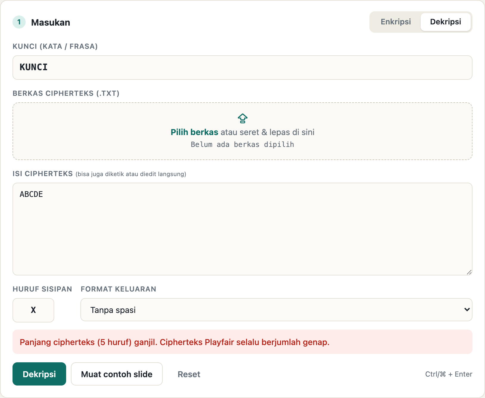

Algoritma kriptografi klasik adalah algoritma berbasis karakter yang dahulu dikerjakan hanya dengan pena dan kertas. Meskipun sudah tidak aman untuk kebutuhan modern, algoritma klasik tetap penting dipelajari karena menjadi dasar pemahaman konsep kriptografi, merupakan fondasi algoritma kriptografi modern, dan memperlihatkan kelemahan-kelemahan yang harus dihindari dalam perancangan sistem cipher.
Salah satu algoritma klasik yang menarik adalah Playfair cipher, yaitu cipher substitusi poligram yang mengenkripsi pasangan huruf (bigram), bukan huruf tunggal. Dengan mengenkripsi bigram, distribusi frekuensi huruf pada cipherteks menjadi lebih datar sehingga analisis frekuensi huruf tunggal menjadi jauh lebih sulit dibandingkan cipher abjad-tunggal seperti Caesar cipher.
Pada tugas K1 mata kuliah Keamanan Informasi ini dibuat sebuah aplikasi web yang mengimplementasikan enkripsi Playfair cipher terhadap berkas teks, beserta laporan implementasinya.
Tabel 1. Spesifikasi aplikasi dan pemenuhannya
| Komponen | Spesifikasi | Pemenuhan pada aplikasi |
|---|---|---|
| Masukan | Berkas teks asli | Unggah berkas .txt (klik atau drag & drop); isi berkas tampil dan dapat disunting. |
| Kunci | Kata/frasa kunci | Kolom kunci; bujursangkar 5×5 diperbarui secara langsung saat kunci diketik. |
| Keluaran | Berkas/teks terenkripsi | Cipherteks ditampilkan, dapat disalin, dan diunduh sebagai berkas *-terenkripsi.txt. |
| Keluaran | Aplikasi program | Aplikasi web statis (HTML, CSS, JavaScript) pada folder app/. |
| Keluaran | Laporan PDF dengan screenshot | Dokumen ini (BAB IV memuat screenshot program). |
Cipher substitusi poligram mensubstitusi blok huruf plainteks dengan blok huruf cipherteks, misalnya AS diganti RT. Jika panjang blok dua huruf disebut digram (bigram). Tujuannya adalah membuat distribusi kemunculan poligram menjadi datar sehingga menyulitkan analisis frekuensi.
Playfair cipher ditemukan oleh Sir Charles Wheatstone dan dipromosikan oleh Baron Lyon Playfair pada tahun 1854. Kunci kriptografinya adalah 25 huruf yang disusun dalam bujursangkar 5×5 dengan menghilangkan huruf J dari abjad, sehingga jumlah kemungkinan kunci adalah 25! = 15.511.210.043.330.985.984.000.000.
Huruf-huruf unik dari kata/frasa kunci ditulis terlebih dahulu dari kiri ke kanan dan dari atas ke bawah, kemudian dilanjutkan dengan huruf alfabet yang belum muncul. Tabel 2 memperlihatkan bujursangkar yang digunakan pada contoh materi kuliah (huruf dari kunci diberi latar biru).
Tabel 2. Bujursangkar kunci pada contoh materi kuliah (kunci ALNGESHPUB)
| A | L | N | G | E |
| S | H | P | U | B |
| C | D | F | I | K |
| M | O | Q | R | T |
| V | W | X | Y | Z |
Contoh: plainteks temui ibu nanti malam menjadi bigram TE MU IX IB UN AN TI MA LA MX.
Misalkan huruf pertama bigram berada pada baris r1 kolom c1 dan huruf kedua pada baris r2 kolom c2 (indeks 0–4):
Dekripsi merupakan kebalikan enkripsi: pada baris yang sama huruf diganti huruf di kirinya, ((c + 4) mod 5); pada kolom yang sama huruf diganti huruf di atasnya, ((r + 4) mod 5); aturan persegi panjang tetap sama. Terakhir, huruf X yang tidak mengandung makna (sisipan) dibuang.
Terdapat 26 × 26 = 676 bigram sehingga identifikasi bigram individual lebih sukar daripada huruf tunggal. Namun ukuran poligram hanya dua huruf, sehingga Playfair cipher tetap tidak aman: dengan tabel frekuensi pasangan huruf (misalnya TH dan HE dalam bahasa Inggris) dan cipherteks yang cukup banyak, cipher ini dapat dipecahkan melalui analisis frekuensi bigram.
FileReader API (UTF-8); penyimpanan hasil: Blob + tautan unduhan.node:test; laporan dan screenshot dibuat otomatis dengan Chrome headless (puppeteer-core).ki-k1/ ├── app/ │ ├── index.html halaman antarmuka │ ├── style.css tampilan │ ├── playfair.js modul inti algoritma Playfair (dipakai browser & Node.js) │ └── app.js logika antarmuka: baca berkas, proses, tampilkan, unduh ├── samples/ │ ├── plainteks.txt berkas teks asli contoh │ ├── plainteks-terenkripsi.txt berkas hasil enkripsi (diunduh dari aplikasi) │ └── plainteks-terdekripsi.txt berkas hasil dekripsi (diunduh dari aplikasi) ├── tests/playfair.test.js unit test ├── tools/ skrip pembuat laporan PDF └── laporan/ laporan HTML/PDF dan screenshot
Modul inti playfair.js dipisahkan dari antarmuka (app.js) sehingga fungsi yang sama dapat diuji langsung melalui Node.js. Setiap fungsi enkripsi/dekripsi mengembalikan hasil akhir sekaligus rincian langkah per bigram (posisi asal, aturan, posisi hasil) yang ditampilkan pada antarmuka.
Fungsi normalize mengubah teks menjadi huruf kapital, mengganti J dengan I, dan membuang karakter non-huruf. Fungsi buildKeySquare menggabungkan huruf kunci dengan alfabet 25 huruf, mengambil huruf unik, lalu menyusunnya ke dalam matriks 5×5 beserta tabel posisi setiap huruf agar pencarian posisi bernilai O(1).
/** Susun bujursangkar kunci 5x5 dari kata/frasa kunci. */
function buildKeySquare(key) {
const normalizedKey = normalize(key);
const seen = new Set();
const sequence = [];
for (const ch of normalizedKey + ALPHABET) {
if (!seen.has(ch)) {
seen.add(ch);
sequence.push(ch);
}
}
const grid = [];
const position = {};
sequence.forEach((ch, i) => {
const row = Math.floor(i / SIZE);
const col = i % SIZE;
if (!grid[row]) grid[row] = [];
grid[row][col] = ch;
position[ch] = { row, col };
});
return {
key: normalizedKey,
keyLetters: Array.from(new Set(normalizedKey)).join(''),
sequence: sequence.join(''),
grid,
position,
};
}
Plainteks dibaca dua huruf sekaligus. Bila kedua huruf sama, hanya huruf pertama yang diambil dan dipasangkan dengan huruf sisipan (default X); bila tersisa satu huruf di akhir, huruf tersebut dipasangkan dengan huruf tambahan. Kasus khusus huruf kembar XX menggunakan sisipan Q agar tidak menghasilkan bigram kembar baru.
/**
* Pecah plainteks menjadi bigram.
* note: null (normal) | 'sisip' (huruf kembar disisipi) | 'ganjil' (tambahan di akhir)
*/
function toBigrams(text, filler) {
const f = resolveFiller(filler);
const s = normalize(text);
const bigrams = [];
let i = 0;
while (i < s.length) {
const a = s[i];
const b = s[i + 1];
if (b === undefined) {
bigrams.push({ pair: a + fillerFor(a, f), note: 'ganjil' });
i += 1;
} else if (a === b) {
bigrams.push({ pair: a + fillerFor(a, f), note: 'sisip' });
i += 1;
} else {
bigrams.push({ pair: a + b, note: null });
i += 2;
}
}
return { normalized: s, bigrams };
}
Satu fungsi digunakan untuk kedua arah. Pergeseran bernilai +1 untuk enkripsi dan +4 (setara −1 mod 5) untuk dekripsi; aturan persegi panjang tidak bergantung pada arah.
/** Transformasi satu bigram. direction: 'encrypt' | 'decrypt'. */
function transformPair(pair, square, direction) {
const shift = direction === 'decrypt' ? SIZE - 1 : 1;
const p1 = square.position[pair[0]];
const p2 = square.position[pair[1]];
let c1;
let c2;
let rule;
if (p1.row === p2.row) {
rule = 'baris';
c1 = { row: p1.row, col: (p1.col + shift) % SIZE };
c2 = { row: p2.row, col: (p2.col + shift) % SIZE };
} else if (p1.col === p2.col) {
rule = 'kolom';
c1 = { row: (p1.row + shift) % SIZE, col: p1.col };
c2 = { row: (p2.row + shift) % SIZE, col: p2.col };
} else {
rule = 'persegi';
c1 = { row: p1.row, col: p2.col };
c2 = { row: p2.row, col: p1.col };
}
return {
input: pair,
output: square.grid[c1.row][c1.col] + square.grid[c2.row][c2.col],
rule,
from: [p1, p2],
to: [c1, c2],
};
}
Setelah dekripsi, X dianggap sisipan apabila berada di antara dua huruf kembar (misalnya IX IB → IIB) atau berada di akhir pesan. Karena heuristik ini dapat ikut membuang X asli, aplikasi juga menampilkan hasil mentah sebelum pembuangan.
/**
* Buang huruf sisipan hasil dekripsi (langkah 4 pada slide: "buang huruf X yang tidak
* mengandung makna"): X di antara dua huruf kembar dan X di akhir pesan.
* Heuristik ini bisa ikut membuang X asli (mis. "EXE"), karena itu hasil mentah juga disediakan.
*/
function markRemovableFillers(steps, filler) {
steps.forEach((step, i) => {
const p = step.output;
const next = steps[i + 1];
const isFiller = p[1] === fillerFor(p[0], filler);
step.note = null;
if (isFiller && next && next.output[0] === p[0]) step.note = 'sisip';
else if (isFiller && !next) step.note = 'ganjil';
});
return steps.map((s) => (s.note ? s.output[0] : s.output)).join('');
}
Tabel 3. Fitur aplikasi
| Fitur | Keterangan |
|---|---|
| Mode enkripsi & dekripsi | Dipilih melalui tombol segmen; label masukan dan nama berkas keluaran menyesuaikan mode. |
| Unggah berkas teks | Tombol pilih berkas atau drag & drop, batas 5 MB, isi berkas dapat disunting. |
| Bujursangkar kunci langsung | Matriks 5×5 diperbarui setiap kunci diketik; huruf yang berasal dari kunci ditandai. |
| Rincian proses | Hasil normalisasi, daftar bigram (huruf sisipan ditandai), serta tabel posisi dan aturan untuk setiap bigram; posisi disorot pada bujursangkar. |
| Keluaran | Format per bigram, blok 5 huruf, atau tanpa spasi; tombol Salin, Unduh .txt, dan “Gunakan sebagai masukan” untuk langsung menguji dekripsi. |
| Analisis frekuensi | Histogram frekuensi huruf plainteks dibandingkan cipherteks. |
| Validasi | Kunci kosong, teks kosong, cipherteks ganjil, dan bigram kembar pada cipherteks ditolak dengan pesan yang jelas. |
Aplikasi dijalankan dengan membuka berkas app/index.html pada peramban. Halaman terdiri atas kolom utama (masukan dan hasil) serta panel samping yang menampilkan bujursangkar kunci.

Pengujian menggunakan berkas samples/plainteks.txt dan kunci KEAMANAN INFORMASI. Isi berkas teks asli adalah sebagai berikut.
Keamanan informasi adalah upaya melindungi data dari akses, penggunaan, pengungkapan, dan perubahan oleh pihak yang tidak berwenang. Tiga pilar utamanya adalah kerahasiaan, integritas, dan ketersediaan. Playfair cipher ditemukan oleh Sir Charles Wheatstone pada tahun 1854 dan dipopulerkan oleh Baron Lyon Playfair. Cipher ini mengenkripsi pasangan huruf sehingga analisis frekuensi huruf tunggal menjadi jauh lebih sulit.

Setelah kunci diketik, panel samping langsung menampilkan bujursangkar kunci. Berkas yang dipilih ditampilkan nama dan ukurannya, dan isinya dimuat ke kolom teks.
Tabel 4. Bujursangkar kunci "KEAMANAN INFORMASI"
| K | E | A | M | N |
| I | F | O | R | S |
| B | C | D | G | H |
| L | P | Q | T | U |
| V | W | X | Y | Z |

Proses enkripsi menghasilkan 179 bigram dari 355 huruf, dengan 3 huruf sisipan. Distribusi aturan: 47 baris sama, 28 kolom sama, dan 104 persegi panjang.


Tabel 5. Dua belas langkah pertama enkripsi berkas contoh
| No | Bigram | Posisi (b,k) | Aturan | Posisi hasil | Hasil |
|---|---|---|---|---|---|
| 1 | KE | (1,1) (1,2) | Baris sama | (1,2) (1,3) | EA |
| 2 | AM | (1,3) (1,4) | Baris sama | (1,4) (1,5) | MN |
| 3 | AN | (1,3) (1,5) | Baris sama | (1,4) (1,1) | MK |
| 4 | AN | (1,3) (1,5) | Baris sama | (1,4) (1,1) | MK |
| 5 | IN | (2,1) (1,5) | Persegi panjang | (2,5) (1,1) | SK |
| 6 | FO | (2,2) (2,3) | Baris sama | (2,3) (2,4) | OR |
| 7 | RM | (2,4) (1,4) | Kolom sama | (3,4) (2,4) | GR |
| 8 | AS | (1,3) (2,5) | Persegi panjang | (1,5) (2,3) | NO |
| 9 | IA | (2,1) (1,3) | Persegi panjang | (2,3) (1,1) | OK |
| 10 | DA | (3,3) (1,3) | Kolom sama | (4,3) (2,3) | QO |
| 11 | LA | (4,1) (1,3) | Persegi panjang | (4,3) (1,1) | QK |
| 12 | HU | (3,5) (4,5) | Kolom sama | (4,5) (5,5) | UZ |
Huruf sisipan ditambahkan pada bigram: ke-28 GX (sisipan (huruf kembar)), ke-73 AX (sisipan (huruf kembar)), ke-86 AX (sisipan (huruf kembar)).
Berkas hasil enkripsi yang diunduh dari aplikasi (samples/plainteks-terenkripsi.txt) berisi cipherteks berikut.
EA MN MK MK SK OR GR NO OK QO QK UZ QE XM NA VB AH ZS BR QO QM QO SF ME FN FU AK DY HT KM MK WF MH ZS BM EQ MK QO EU MF LH ND MK IQ NC LF DN MV MK TY OB ME CK FY AK MK TY RB EQ BV MO LU MN MK XM OQ KQ ND EA OM DN IF OA MK SK PM TG RL NO QO KE MP MF FN BO OA MK QP MX OE FS BF UC MF BO PM NT EM AS PK UH FS DB MO PK FZ CN MQ RU SA FW OQ MQ ND ZS QO AH FL FQ LP MF EM AS PK BC MO SA TV SA QP MX OE FS BF UC MF SK RK AK CM KE SF UF FL NO MK DM SU TS PS FN BS MH DM MK KQ FI FI OS AE PN SH SB TS PS UL MH DM TK AK OK BO OK ZU PK LB UH LP RL
encrypt yang dijalankan terpisah di Node.js: identik.
Nilai index of coincidence (IC) plainteks adalah 0,0766 sedangkan cipherteks 0,0610. Huruf terbanyak pada plainteks adalah A (17,5%), N (10,7%), I (9,3%), E (8,5%), R (5,6%); pada cipherteks M (13,1%), K (9,8%), F (7,8%), O (7,8%), S (7,0%). IC cipherteks yang lebih rendah menunjukkan distribusi huruf cipherteks lebih datar, sesuai tujuan Playfair cipher untuk menyamarkan frekuensi huruf tunggal. Meskipun demikian, frekuensi bigram tetap terjaga sehingga cipher masih rentan terhadap analisis frekuensi pasangan huruf.
Untuk memastikan cipherteks dapat dikembalikan, berkas samples/plainteks-terenkripsi.txt didekripsi kembali dengan kunci yang sama.


Isi berkas hasil dekripsi (samples/plainteks-terdekripsi.txt):
KEAMANANINFORMASIADALAHUPAYAMELINDUNGIDATADARIAKSESPENGGUNAANPENGUNGKAPANDANPERUBAHANOLEHPIHAKYANGTIDAKBERWENANGTIGAPILARUTAMANYAADALAHKERAHASIAANINTEGRITASDANKETERSEDIAANPLAYFAIRCIPHERDITEMUKANOLEHSIRCHARLESWHEATSTONEPADATAHUNDANDIPOPULERKANOLEHBARONLYONPLAYFAIRCIPHERINIMENGENKRIPSIPASANGANHURUFSEHINGGAANALISISFREKUENSIHURUFTUNGGALMENIADIIAUHLEBIHSULIT
Tabel 6. Hasil verifikasi dekripsi
| Pemeriksaan | Hasil |
|---|---|
| Hasil dekripsi mentah sama dengan rangkaian bigram plainteks (termasuk huruf sisipan) | Sesuai |
| Hasil dekripsi setelah huruf sisipan dibuang sama dengan plainteks ternormalisasi | Sesuai |
Perlu dicatat bahwa hasil dekripsi tidak memuat spasi, tanda baca, dan huruf J, karena informasi tersebut memang dihilangkan pada tahap pra-pemrosesan Playfair cipher.
Implementasi diuji menggunakan contoh pada materi kuliah: plainteks temui ibu nanti malam dengan bujursangkar pada Tabel 2. Tombol Muat contoh slide pada aplikasi memuat contoh ini secara otomatis.

Tabel 7. Perbandingan hasil aplikasi dengan contoh materi kuliah
| No | Bigram | Aturan | Hasil aplikasi | Hasil pada slide | Status |
|---|---|---|---|---|---|
| 1 | TE | Kolom sama | ZB | ZB | ✓ |
| 2 | MU | Persegi panjang | RS | RS | ✓ |
| 3 | IX | Persegi panjang | FY | FY | ✓ |
| 4 | IB | Persegi panjang | KU | KU | ✓ |
| 5 | UN | Persegi panjang | PG | PG | ✓ |
| 6 | AN | Baris sama | LG | LG | ✓ |
| 7 | TI | Persegi panjang | RK | RK | ✓ |
| 8 | MA | Kolom sama | VS | VS | ✓ |
| 9 | LA | Baris sama | NL | NL | ✓ |
| 10 | MX | Persegi panjang | QV | QV | ✓ |
ZB RS FY KU PG LG RK VS NL QV sama persis dengan cipherteks pada slide ZB RS FY KU PG LG RK VS NL QV. Contoh aturan tunggal pada slide (DI→FK, QT→RM, NQ→PX, OW→WL, HZ→BW) juga diuji pada unit test.
Aplikasi menolak cipherteks dengan jumlah huruf ganjil karena cipherteks Playfair selalu berjumlah genap. Validasi serupa berlaku untuk kunci kosong, teks kosong, dan bigram kembar pada cipherteks.
Pengujian otomatis dijalankan dengan perintah npm test (Node.js v22.20.0). Hasil: 10 dari 10 kasus lulus.
Tabel 8. Daftar kasus unit test
| No | Kasus uji | Status |
|---|---|---|
| 1 | bujursangkar kunci sesuai contoh slide 68 | Lulus |
| 2 | bujursangkar tanpa huruf J, huruf unik, J pada kunci menjadi I | Lulus |
| 3 | bigram contoh slide 67: "temui ibu nanti malam" | Lulus |
| 4 | aturan per bigram sesuai slide 68–70 | Lulus |
| 5 | enkripsi contoh slide 71 | Lulus |
| 6 | dekripsi contoh slide mengembalikan plainteks dan membuang X sisipan | Lulus |
| 7 | normalisasi: J -> I, diakritik dan non-huruf dibuang | Lulus |
| 8 | huruf sisipan X pada "XX" diganti Q | Lulus |
| 9 | dekripsi menolak cipherteks ganjil atau berisi bigram kembar | Lulus |
| 10 | round-trip acak: dekripsi(enkripsi(p)) == bigram plainteks | Lulus |
temui ibu nanti malam sama persis dengan slide (ZB RS FY KU PG LG RK VS NL QV).app/index.html menggunakan peramban modern (Chrome, Edge, Firefox, atau Safari). Tidak diperlukan instalasi maupun server..txt.npm test. Membuat ulang laporan: npm install lalu npm run report./**
* playfair.js — Implementasi inti Playfair Cipher.
*
* Aturan mengikuti materi K2 Kriptografi Klasik (KOM1314):
* - Bujursangkar kunci 5x5 berisi 25 huruf (huruf J dihilangkan, J -> I).
* - Pesan ditulis dalam bigram; huruf kembar dalam satu bigram disisipi X,
* dan jika jumlah huruf ganjil ditambahkan X di akhir.
* - Enkripsi: baris sama -> geser kanan, kolom sama -> geser bawah,
* selain itu -> titik sudut persegi panjang.
* - Dekripsi: kebalikannya (geser kiri / geser atas), lalu buang X sisipan.
*
* Modul ini dapat dipakai di browser (window.Playfair) maupun Node.js (require).
*/
(function (root, factory) {
if (typeof module === 'object' && module.exports) {
module.exports = factory();
} else {
root.Playfair = factory();
}
})(typeof self !== 'undefined' ? self : this, function () {
'use strict';
const SIZE = 5;
const ALPHABET = 'ABCDEFGHIKLMNOPQRSTUVWXYZ'; // 25 huruf, tanpa J
/** Kapitalkan, hapus diakritik, ganti J -> I, dan buang semua karakter non-huruf. */
function normalize(text) {
return String(text == null ? '' : text)
.normalize('NFD')
.replace(/[̀-ͯ]/g, '')
.toUpperCase()
.replace(/J/g, 'I')
.replace(/[^A-Z]/g, '');
}
/** Susun bujursangkar kunci 5x5 dari kata/frasa kunci. */
function buildKeySquare(key) {
const normalizedKey = normalize(key);
const seen = new Set();
const sequence = [];
for (const ch of normalizedKey + ALPHABET) {
if (!seen.has(ch)) {
seen.add(ch);
sequence.push(ch);
}
}
const grid = [];
const position = {};
sequence.forEach((ch, i) => {
const row = Math.floor(i / SIZE);
const col = i % SIZE;
if (!grid[row]) grid[row] = [];
grid[row][col] = ch;
position[ch] = { row, col };
});
return {
key: normalizedKey,
keyLetters: Array.from(new Set(normalizedKey)).join(''),
sequence: sequence.join(''),
grid,
position,
};
}
/** Huruf sisipan; jika sama dengan huruf yang dipisahkan (mis. "XX"), pakai Q (atau Z). */
function fillerFor(letter, filler) {
if (letter !== filler) return filler;
return filler === 'Q' ? 'Z' : 'Q';
}
function resolveFiller(filler) {
return normalize(filler).charAt(0) || 'X';
}
/**
* Pecah plainteks menjadi bigram.
* note: null (normal) | 'sisip' (huruf kembar disisipi) | 'ganjil' (tambahan di akhir)
*/
function toBigrams(text, filler) {
const f = resolveFiller(filler);
const s = normalize(text);
const bigrams = [];
let i = 0;
while (i < s.length) {
const a = s[i];
const b = s[i + 1];
if (b === undefined) {
bigrams.push({ pair: a + fillerFor(a, f), note: 'ganjil' });
i += 1;
} else if (a === b) {
bigrams.push({ pair: a + fillerFor(a, f), note: 'sisip' });
i += 1;
} else {
bigrams.push({ pair: a + b, note: null });
i += 2;
}
}
return { normalized: s, bigrams };
}
/** Transformasi satu bigram. direction: 'encrypt' | 'decrypt'. */
function transformPair(pair, square, direction) {
const shift = direction === 'decrypt' ? SIZE - 1 : 1;
const p1 = square.position[pair[0]];
const p2 = square.position[pair[1]];
let c1;
let c2;
let rule;
if (p1.row === p2.row) {
rule = 'baris';
c1 = { row: p1.row, col: (p1.col + shift) % SIZE };
c2 = { row: p2.row, col: (p2.col + shift) % SIZE };
} else if (p1.col === p2.col) {
rule = 'kolom';
c1 = { row: (p1.row + shift) % SIZE, col: p1.col };
c2 = { row: (p2.row + shift) % SIZE, col: p2.col };
} else {
rule = 'persegi';
c1 = { row: p1.row, col: p2.col };
c2 = { row: p2.row, col: p1.col };
}
return {
input: pair,
output: square.grid[c1.row][c1.col] + square.grid[c2.row][c2.col],
rule,
from: [p1, p2],
to: [c1, c2],
};
}
function countRules(steps) {
const rules = { baris: 0, kolom: 0, persegi: 0 };
steps.forEach((s) => { rules[s.rule] += 1; });
return rules;
}
function encrypt(plaintext, key, options) {
const opts = options || {};
const filler = resolveFiller(opts.filler);
const square = buildKeySquare(key);
const { normalized, bigrams } = toBigrams(plaintext, filler);
const steps = bigrams.map((b) =>
Object.assign(transformPair(b.pair, square, 'encrypt'), { note: b.note })
);
return {
mode: 'encrypt',
filler,
square,
normalized,
steps,
result: steps.map((s) => s.output).join(''),
stats: {
letters: normalized.length,
bigrams: steps.length,
fillers: steps.filter((s) => s.note).length,
rules: countRules(steps),
},
};
}
/**
* Buang huruf sisipan hasil dekripsi (langkah 4 pada slide: "buang huruf X yang tidak
* mengandung makna"): X di antara dua huruf kembar dan X di akhir pesan.
* Heuristik ini bisa ikut membuang X asli (mis. "EXE"), karena itu hasil mentah juga disediakan.
*/
function markRemovableFillers(steps, filler) {
steps.forEach((step, i) => {
const p = step.output;
const next = steps[i + 1];
const isFiller = p[1] === fillerFor(p[0], filler);
step.note = null;
if (isFiller && next && next.output[0] === p[0]) step.note = 'sisip';
else if (isFiller && !next) step.note = 'ganjil';
});
return steps.map((s) => (s.note ? s.output[0] : s.output)).join('');
}
function decrypt(ciphertext, key, options) {
const opts = options || {};
const filler = resolveFiller(opts.filler);
const square = buildKeySquare(key);
const normalized = normalize(ciphertext);
if (normalized.length % 2 !== 0) {
throw new Error(
`Panjang cipherteks (${normalized.length} huruf) ganjil. Cipherteks Playfair selalu berjumlah genap.`
);
}
const steps = [];
for (let i = 0; i < normalized.length; i += 2) {
const pair = normalized.slice(i, i + 2);
if (pair[0] === pair[1]) {
throw new Error(
`Bigram ke-${i / 2 + 1} "${pair}" berisi huruf kembar, sehingga bukan cipherteks Playfair yang valid.`
);
}
steps.push(transformPair(pair, square, 'decrypt'));
}
const rawResult = steps.map((s) => s.output).join('');
const result = markRemovableFillers(steps, filler);
return {
mode: 'decrypt',
filler,
square,
normalized,
steps,
rawResult,
result,
stats: {
letters: normalized.length,
bigrams: steps.length,
fillers: steps.filter((s) => s.note).length,
rules: countRules(steps),
},
};
}
/** Format keluaran: groupSize 2 (bigram), 5 (blok), atau 0 (tanpa spasi). */
function format(text, groupSize, groupsPerLine) {
const size = Number(groupSize) || 0;
if (!size) return text;
const groups = text.match(new RegExp(`.{1,${size}}`, 'g')) || [];
const perLine = groupsPerLine || (size === 2 ? 20 : 12);
const lines = [];
for (let i = 0; i < groups.length; i += perLine) {
lines.push(groups.slice(i, i + perLine).join(' '));
}
return lines.join('\n');
}
/** Frekuensi kemunculan huruf A-Z. */
function letterFrequency(text) {
const counts = new Array(26).fill(0);
for (const ch of String(text).toUpperCase()) {
const code = ch.charCodeAt(0) - 65;
if (code >= 0 && code < 26) counts[code] += 1;
}
return counts;
}
return {
SIZE,
ALPHABET,
normalize,
buildKeySquare,
toBigrams,
transformPair,
encrypt,
decrypt,
format,
letterFrequency,
};
});